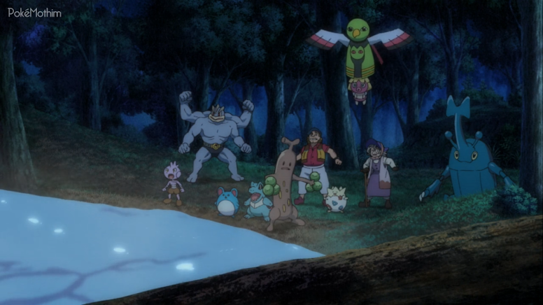
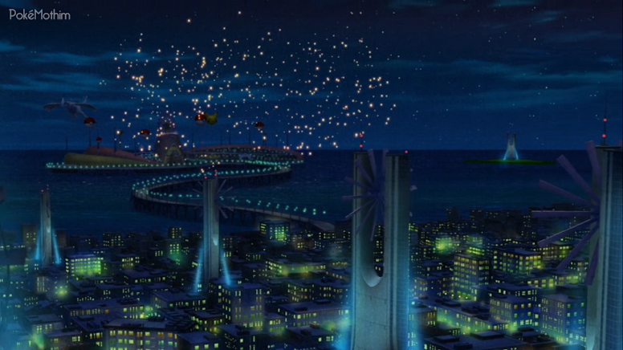

Pokémon, o Filme: O Poder de Todos
🟡 Nome Japonês: Pocket Monsters the Movie: Everyone's Story
🟡 Nome Americano: Pokémon the Movie: The Power of Us
🟡 Nome Brasileiro: Pokémon, o Filme: O Poder de Todos
Data de lançamento:
🎞 Japão: 13 de julho de 2018
🎞 Estados Unidos: 24 de novembro de 2018
🎞 Brasil: 11 de janeiro de 2019
História
O filme se inicia com uma menina chamada Rita se despedindo de
algumas amigas na escola e indo para um hospital para visitar o seu
irmão chamado Ricardo. Rita é uma jovem treinadora iniciante que
está no ensino médio e é muito próxima de seu irmão. Enquanto
conversam no hospital, Ricardo expressa seu desejo de comparecer ao
Festival do Vento que acontecerá na cidade de Fula, mas por estar
com a perna machucada, não poderá ir. Ricardo então pede a Rita um
favor: ele pede que a irmã capture um Pokémon para ele durante o
festival. Rita se mostra relutante, mas acaba aceitando depois de
ver o desejo de seu irmão e por ele ter a presenteado com um óculos
vermelho para que ela usasse durante o festival.
A cena seguinte mostra uma garotinha chamada Margarete que desperta
após o barulho de alguns fogos de artifício. Após ela ir até sua
janela e ver sobre o que se tratava, ela avista e se despede de seu
pai, o prefeito da cidade, que está entrando em seu carro e indo
provavelmente para alguma tarefa na cidade. Logo em seguida é
mostrado Ash e Pikachu na cidade de Fula, que estão se divertindo e
conhecendo todo o local onde acontecerá o festival. Ali naquele
local também está Rita, que foi pra lá para cumprir a promessa que
fez ao seu irmão.
Em uma espécie de canal de televisão está Ricardo - na qual ninguém
sabe se tratar dele - apresentando um programa que trará notícias
sobre o evento, já que ele não poderá comparecer ao festival por
estar com a perna machucada. Ricardo conta que o festival passou a
acontecer após uma promessa feita por Lugia. A cidade de Fula era um
local não fértil e desolado, mas que abrigava uma população que
tinha um apego e um forte vínculo com os Pokémon. Esse vínculo
acabou agradando Lugia, que passou a presentear a região com o seu
poder do vento. Esse poder foi capaz de gerar várias mecânicas que
acabaram criando a atual cidade de Fula, e é justamente por isso
que, nos dias atuais, todos fazem esse festival para celebrar, como
forma de gratidão, esse poder de Lugia - que também faz com que o
Pokémon apareça (ele aparece uma vez por ano presenteando os
moradores por mais um ano com o poder do vento).
Enquanto Ricardo ainda explica sobre o poder de Lugia, uma garotinha
chamada Raquel, que está acompanhada de sua mãe, aparece trazendo
dois sorvetes: um para ela e um para seu tio chamado Kalil. Enquanto
ficam ali saboreando o sorvete, Raquel pede para seu tio mostrar seu
Pokémon, mas por algum motivo ele dá uma desculpa dizendo que seu
Pokémon está cansado após uma dura batalha. Raquel pergunta a seu
tio sobre o balão de Lugia e ele começa a contar sobre a história de
uma forma que chama a atenção de outras pessoas, mas a mãe de
Raquel, sua irmã, fica preocupada com a forma que ele conta aquilo.
Em algum lugar ali perto, alguns garotos estão vendendo limonada e
oferecem para uma senhora - que já havia aparecido em outra cena
gritando com um Sunflora. O Phanpy dos garotos a assusta, fazendo-a
ficar irritada. Quando estão indo embora, eles comentam que aquela
senhora tem a reputação de não gostar muito de Pokémon e, nesse
momento, Margarete surge e acaba tropeçando na carroça em que os
garotos levavam os limões, fazendo com que um deles ficasse irritado
jogando um limão em sua direção. Nesse momento, Ash chega, impede o
limão de atingir Margarete e acaba ocasionando uma batalha entre
Pikachu e Phanpy.
Após os garotos irem embora, Ash e Margarete se apresentam um para o
outro e, de longe, como sempre, a Equipe Rocket os observa tramando
o seu próximo passo para pegar Pikachu. Margarete conta a Ash sobre
algumas coisas do festival e sobre como uma antiga usina acima da
montanha teve um papel importante para a história da cidade de Fula.
Ela comenta que, no passado, Lugia trouxe uma forte chuva que
impediu um incêndio naquela usina acima da montanha (Ricardo já
havia comentado sobre isso quando apresentava o festival e Kalil
também quando contava a todos a sua "história").
Na cena seguinte, Kalil aparece ganhando um brinquedo para Raquel,
deixando-a muito feliz. No meio de sua euforia, Raquel acaba
tropeçando em Rita, que acaba derrubando sua Poké Bola, que está
vazia. Intrigada pelo fato de a Poké Bola estar vazia, Raquel
questiona a Rita sobre seu Pokémon, mas ela explica que veio para o
festival justamente para capturar um Pokémon. Raquel então diz que
seu tio, como o melhor treinador para ela, pode ajudá-la na sua
missão, e Rita rapidamente fica animada e mostra qual Pokémon
gostaria de pegar. Kalil, tentando impressionar Raquel, diz a Rita
que o Pokémon da foto pode ser encontrado no topo da montanha.
Na cena seguinte, Ash e Pikachu aparecem brincando em uma fonte com
outros treinadores e Pokémon, até que um alto falante toca e uma
mulher avisa que a corrida de captura Pokémon irá começar e que
todos os treinadores que quiserem participar serão bem vindos. Logo
em seguida, em um local que parece um laboratório, um rapaz chamado
Tiago é pressionado por um cientista para conseguir algo precioso
para uma espécie de pesquisa que estão desenvolvendo, mas que ele
ainda não o fez. Ainda no laboratório, a senhora que havia esbarrado
nos meninos da limonada aparece e entrega para Tiago um papel para
que ele entregue a administração do festival e, após ela ir embora,
Kalil aparece surpreendendo-o.
Margarete aparece indo em direção a uma floresta e chega em um local
abandonado que parece uma estufa. Nesse local, ela deixa algumas
frutas laran, um pão e uma bebida para alguma coisa que está vivendo
ali naquele lugar. Um Teddiursa e um Ditto que observam de longe
também recebem alguns agrados da garotinha, que parte logo em
seguida.
Na cena seguinte, vários treinadores se concentram em um local
prontos para participar da corrida da captura. Ali também está Rita,
que espera conseguir aproveitar a oportunidade e capturar seu
primeiro Pokémon para seu irmão. O juiz explica que vários Pokémon
com marcas especiais estão espalhados pela cidade e que os
treinadores precisarão capturá-los. Obviamente, há alguns Pokémon
muito fortes e que provavelmente valerão mais pontos. Kalil, que
está participando, está usando um tipo de fone de ouvido especial e
que provavelmente está recebendo instruções de Tiago em troca de
ajuda com sua pesquisa. Na cena em que entrou no laboratório, Kalil
pediu a ajuda de Tiago na corrida em troca de uma apresentação da
história de Lugia aos cientistas, que Kalil contou anteriormente
para sua sobrinha.
Após a corrida começar, Ash começa a capturar vários Pokémon com as
Poké Bolas cedidas pelo festival. Enquanto capturava um Pokémon, ele
se depara com um Tyranitar raivoso que estava com uma corda presa em
seu pescoço. Ash rapidamente corre atrás do Pokémon para ajudá-lo, o
que faz com que chame a atenção do apresentador e de algumas pessoas
que assistiam ao festival, já que Tyranitar está com raiva e
derrubando tudo que vê pela frente. Após conseguir usar o Cauda de
Ferro de Pikachu para tirar a corda, Ash finalmente salva o Pokémon
daquela agonia que ele estava, ganhando assim os aplausos de todos
que estavam ali. Apesar de ser um grande feito salvando Tyranitar,
Ash acaba ficando em segundo lugar e Kalil, com a ajuda de Tiago,
ganha, recebendo o troféu do pai de Margarete.
 Enquanto é entrevistado, Kalil diz que seu objetivo é capturar um raro
Pokémon que existe ali nas redondezas. Margarete, que ouve tudo
atentamente, sai dali com uma expressão de preocupada. Em casa,
Margarete conversa com seu pai e diz que ouviu do homem que ganhou a
corrida que existe ali um Pokémon raro, o qual se trata de Zeraora. O
prefeito, com um ar de irritado diz que não quer que a filha fale
sobre isso e que vai assustar as pessoas da cidade.
Enquanto é entrevistado, Kalil diz que seu objetivo é capturar um raro
Pokémon que existe ali nas redondezas. Margarete, que ouve tudo
atentamente, sai dali com uma expressão de preocupada. Em casa,
Margarete conversa com seu pai e diz que ouviu do homem que ganhou a
corrida que existe ali um Pokémon raro, o qual se trata de Zeraora. O
prefeito, com um ar de irritado diz que não quer que a filha fale
sobre isso e que vai assustar as pessoas da cidade.
Rita aparece toda maltrapilha em meio a floresta e até se assusta com alguns Pokémon. Nesse momento dois guardas surgem e dizem a ela que aquele lugar está fechado e proibido e que ela deve ir embora, pois há uma maldição conhecida como "A Maldição de Zeraora". Antes de ir embora, Rita ainda pergunta se o Pokémon que procura existe por ali. O Pokémon se trata de Eevee e os guardas dizem que Eevee não existe por ali, deixando-a com raiva após perceber que Kalil mentiu. Após essa cena, alguns acontecimentos surgem na casa da senhora que tem medo de Pokémon e no laboratório em que Tiago trabalha em sua pesquisa e Ash observa a vista da cidade.

No dia seguinte, Ash e Pikachu se encontram com Rita os procurando
no elevador. Rita pede ajuda a Ash para capturar um Pokémon, já que
a ajuda de Kalil não serviu de nada. Pikachu avista um Pokémon nos
arbustos e quando se aproximam, se trata de Eevee. Ash pede que Rita
use Pikachu para batalhar contra Eevee e assim capturá-lo. Rita
consegue pegar Eevee na segunda tentativa. Ela revela a Ash que
treinava atletismo desde pequena e até ganhou um campeonato
regional, mas após se machucar em um treino, ela acabou tendo um
certo bloqueio de voltar a competir. Enquanto conversam, Ash e Rita
avistam um carro da polícia e ficam curiosos sobre o que poderia
estar acontecendo. A oficial Jenny investiga uma sequência de
sabotagens no festival e alguns atos de vandalismo. O prefeito então
avisa a todos que o festival teve que ser interrompido por essas
questões apresentadas e que em breve reabrirá o festival.
Após o anúncio do prefeito, Ash chega às pressas com Rita para
ajudar na investigação e tentar solucionar o problema. Raquel também
chama seu tio Kalil para ajudar, deixando o prefeito feliz, já que
ele foi quem ganhou a corrida da captura. Kalil se recusa logo de
cara, pois ele diz que irá participar de uma palestra na conferência
de pesquisa (a promessa que ele havia feito a Tiago), mas Rita,
ainda irritada pelo fato dele ter mentido pra ela, o pressiona,
fazendo-o mudar de ideia. Na cena seguinte, é mostrado o laboratório
em que Tiago trabalha. A senhora que tem medo de Pokémon ainda está
lá com alguns Pokémon que invadiram a sua casa na noite anterior
devido a um líquido que se assemelha com o ataque Aroma Doce.
O apresentador do canal de TV, Ricardo, aparece anunciando que
alguém pregou uma peça impedindo a abertura do festival, enquanto
algumas pessoas estão ajudando a limpar o local. Os três garotos que
vendem limonada aparecem e sugerem que tudo aquilo está acontecendo
devido a maldição de Zeraora e Rita questiona sobre o que se trata.
Os garotos explicam que no passado, quando a montanha pegou fogo,
Zeraora desapareceu misteriosamente, fazendo com que aquele lugar
fosse amaldiçoado e que qualquer pessoa que fosse lá causasse um
desastre. Margarete aparece interrompendo os garotos, que também é
interrompida pelo alto falante avisando que o festival será reaberto
depois da ajuda de todos.
Na cena seguinte, Tiago parece preocupado esperando Kalil, que já
deveria ter chegado. Por outro lado, Kalil, que está no local do
festival, parece estranho e sai correndo desesperado. Ash e os
outros vão atrás dele para ver sobre o que se tratava. Após perceber
que Kalil está demorando mais do que o normal, Tiago começa a
apresentação, mas por ter dificuldade de falar em público, ele
começa a se atrapalhar. Kalil chega no local, seguido por Ash, Rita,
sua irmã e sua sobrinha, que o questionam a respeito do que ele irá
fazer ali. Tiago coloca a apresentação, mas sem querer acaba
colocando uma gravação que comprova que Tiago o ajudou durante a
corrida de captura.
Após ficar nervoso vendo que todos estavam confusos sobre o
ocorrido, Kalil deixa a sua Poké Bola cair e, para surpresa de
todos, principalmente de Raquel, não há nada dentro dela, fazendo
com que a garotinha fique triste e decepcionada. Raquel sai correndo
chorando e, a partir desse momento, uma correria começa quando a
Equipe Rocket causa uma confusão dentro do laboratório. Ash sai
correndo atrás deles e Rita fica desesperada após perceber que Eevee
se machucou durante a correria. Tiago aparece e pede que sua Chansey
use o Pulso de Cura para ajudar o Pokémon.
Após uma sequência de cenas com os acontecidos anteriores, todos da
cidade ficam confusos após perceber que a chama eterna, que fazia
com que os moinhos de ventos fossem espalhados, havia se apagado. O
prefeito tenta acalmar a todos para que haja uma solução e
explicação. A chama eterna faz com que Lugia saiba pra onde mandar o
vento e, sem o vento forte passando por ali, a cidade provavelmente
ficará sem energia. Ash e Pikachu vão até o alto da torre em que a
chama eterna ficava para tentar descobrir algo. Chegando lá, Pikachu
sente um cheiro que faz com que ele chegue até o Smeargle de Tiago.
Tiago explica que Smeargle usa sua tinta para marcar território e
que, na noite anterior, um pouco dessa tinta, que estava dentro de
um erlenmeyer (recipiente de laboratório), havia sido roubada do
laboratório.
Na cena seguinte, Margarete aparece sentada com Teddiursa e Ditto no
lugar abandonado falando com alguém e logo é revelado que se trata
de Zeraora. Pouco tempo depois, dois caçadores, que ouviram falar do
Pokémon raro que ali vivia, aparece e pergunta à garotinha se ela
viu algo e ela aponta para uma direção contrária, despistando os
caçadores na intenção de salvar Zeraora. Quando já estão saindo,
Teddiursa sem querer causa um barulho, fazendo com que os caçadores
tentem capturá-lo. Os caçadores liberam seus Pokémon para ajudar na
captura, já que Margarete se posicionou na frente deles. Nesse
momento, Zeraora aparece e protege todos dos ataques dos Pokémon dos
caçadores.
No meio da batalha, os Pokémon dos caçadores lançam ataques, fazendo
que Zeraora se machuque e Margarete se coloque em sua frente,
impedindo que os caçadores lancem uma rede de captura. Antes que
eles terminem o que vieram fazer, Ash chega e com ajuda de Pikachu
impede a rede de fazer contato. O pai de Margarete, Tiago, Rita e a
senhora também estão lá. Margarete então começa a contar como
conheceu Zeraora e que foi ela que pegou a chama eterna. Ela conta
que pegou a chama para que o festival fosse cancelado, já que
algumas pessoas haviam mostrado interesse em capturar o Pokémon
raro, no caso Zeraora. Ela também diz que assim que o festival fosse
cancelado, ela devolveria a chama eterna para seu devido lugar.
O pai de Margarete, o prefeito, também começa a contar uma história
antiga. Ela conta que no passado, Zeraora protegia os Pokémon da
floresta e da montanha, que hoje está proibida. Ele conta que o
incêndio que causou a destruição de muitas áreas selvagens foi
causado pelas pessoas da cidade com o intuito de construir e
enriquecer. Enquanto tudo queimava, alguns Pokémon se machucaram,
mas felizmente Zeraora conseguiu resgatá-los e levá-los para um
lugar tranquilo. Desde então, Zeraora carrega uma raiva sem limite
da humanidade e por isso aquele local se tornou proibido para as
pessoas, pois tudo que Zeraora queria era viver em paz com os
Pokémon. O prefeito fala que o prefeito anterior disse à população
que Zeraora havia sumido e que a maldição foi uma invenção dele com
a finalidade de proteger Zeraora das pessoas.
Quando estão conversando, o vidro roubado pela Equipe Rocket
contendo o Esporo de Efeito explode, causando aos Pokémon um certo
envenenamento. Tiago explica que estava estudando essa habilidade
quando foi roubado e que quando inspirada, os Pokémon ficam com o
corpo entorpecido e envenenados. O prefeito recebe uma ligação
avisando que a fumaça causada pela explosão está adentrando nas ruas
da cidade e que está causando muitos danos aos Pokémon e pessoas.
Ash convoca todos para ajudar a mandar a fumaça embora e o prefeito
questiona a Tiago se há alguma maneira de fazer com que a fumaça
suma. Ele diz que sim, mas que não teria como espalhar em todas as
partes da cidade. A única forma de conseguir espalhar o novo
antídoto pela cidade seria o vento. O prefeito então sugere que
aquela senhora seria a única solução. Nesse momento, é revelado que
aquela senhora se chama Claudia e que ela é avó de Rita. Claudia, no
passado, construiu uma usina elétrica que hoje está desativada. Ela,
por ter construído a usina e elaborado uma hélice que girava em
diferentes sentidos, pode fazer com que o novo antídoto de uma
habilidade chamada Cura Natural seja espalhado pela cidade e impeça
que mais pessoas e Pokémon sejam afetados.
Na cidade, Kalil é surpreendido por um pedido de Raquel e de Mia.
Nesse momento, o Sudowoodo que havia seguido ele por dias durante o
festival demonstra que quer ficar com ele. Após "capturar"
Sudowoodo, Kalil sai correndo da fumaça e vai atrás de sua irmã e
sua sobrinha. No laboratório, enquanto todos estão arrumando as
caixas para evacuarem o local, Tiago chega e diz a todos que não vai
embora, já que quer ficar para ajudar as pessoas e Pokémon. Todos
decidem ficar e ajudar Tiago a criar uma essência de Cura Natural.
Na cidade, todos ficam sem energia quando um curto circuito
acontece, causando um incêndio no transformador que fornecia energia
para a cidade.
Enquanto isso, Kalil carrega Claudia em suas costas para chegar até o local da usina, até que eles se deparam com chamas mais à frente. Nesse momento Claudia se lembra do que aconteceu há muito tempo atrás, quando seu companheiro Snubbull acabou sendo levado pelas chamas. A imagem de Snubbull então aparece para ela e a abraça, fazendo com que ela continue indo em direção a usina. Os Pokémon que a acompanha usam seus ataques para controlar as chamas e abrir caminho. 
Enquanto ainda corre em direção à torre, Rita recebe uma ligação de
seu irmão Ricardo, que diz a ela que procurará uma rota mais segura
e mais fácil. Ela fica confusa com aquilo, mas continua correndo e
seguindo as instruções de seu irmão. Ash e Margarete chegam até onde
Zeraora está e o Pokémon lança um ataque em Ash, impedindo ele de se
aproximar. Ash então tenta conversar com o Pokémon, que continua
atacando. No laboratório, Tiago finalmente termina a essência da
Cura Natural e o prefeito envia para lá um carro para que ele chegue
até a usina em que Claudia está de forma mais rápida.
Já na usina, Claudia coloca uma chave que ela guardou por anos e que
contém um poder de eletricidade. Essa chave faz com a máquina ligue
e ela suba em um local próximo à hélice da usina. Os Pokémon
empurram uma engrenagem enferrujada e conseguem mover a hélice com
muita dificuldade. A hélice se move e fica numa posição em direção a
cidade e, quando finalmente eles estão prontos, Tiago chega com a
essência. Kalil se oferece para levar a essência até um local em que
o vento seja forte, mas Tiago fica receoso depois de Kalil não ter
cumprido sua promessa anterior. Após uma discussão e com o impulso
de Claudia, Kalil e Sudowoodo vão em direção a hélice. Kalil então
joga o vidro com a essência e Sudowoodo usa um ataque para
impulsionar o vidro a chegar perto da hélice e quebrar. Quando
quebra, a essência começa a se espalhar e os Pokémon junto com Tiago
continuam empurrando a engrenagem.
Como já era de se esperar, a força do vento leva a Cura Natural para
a cidade, fazendo a fumaça do Esporo desaparecer. Na floresta, o
incêndio ainda está ocorrendo, e para a surpresa de Ash e Margarete,
os moradores da cidade vêm ajudar com seus Pokémon. Ao tentar se
aproximar de Margarete, o prefeito é impedido por Zeraora, que por
sua vez é acalmado por Margarete, que diz que está tudo bem e todos
os moradores estão ali para ajudar. Com a ajuda de alguns Pokémon, o
fogo é controlado, mas quando vão comemorar, um pilar de ferro cai
em direção a Margarete, que é salva por Zeraora e seu incrível
poder.
Rita finalmente chega na torre e já está pronta para colocar a chama
eterna e invocar Lugia. Com a ajuda de Eevee, Rita consegue empurrar
a chama para dentro do pedestal e nesse momento uma forte luz é
emanada em direção ao céu. Quando ela menos espera, Lugia aparece
com toda a sua glória. Rita pede que Lugia use sua chuva para fazer
com que aqueles lugares que ainda estão pegando fogo sejam
controlados. Lugia traz a chuva, fazendo com que todos fiquem
deslumbrados com sua presença, além da força de vontade e coragem
que Rita teve. Com a chuva caindo, o vento volta para a cidade,
fazendo com que tudo volte ao normal.
Com tudo estabilizado, o prefeito faz um anúncio para todos retirando a mentira inventada anos atrás sobre Zeraora e agradecendo a todos os moradores pela grande ajuda. Nesse momento, todos os moradores lançam lanternas aos céus como comemoração, fazendo com que todos ali continuem vivendo em harmonia. Com o narrador falando sobre os incríveis Pokémon que existem, o filme termina.
Curiosidades
🟡 Ash é visto usando o menor número de Pokémon neste filme do que em qualquer outro, com Pikachu sendo seu único Pokémon conhecido;
🟡 Ash não é visto viajando com ninguém;
🟡 Nenhum dos amigos de Ash da série principal aparece de qualquer forma;
🟡 Qualquer Pokémon falante não é apresentado neste filme desde o 7º filme - Pokémon: Alma Gêmea, com exceção de Meowth.
🟡 A Equipe Rocket foi diretamente responsável pelo conflito principal do filme. Em filmes anteriores, a Equipe Rocket agiu como um alívio cômico ou tentou ajudar a acabar com o conflito;
🟡 A região em que o filme se passa não foi confirmada;
🟡 O título do filme em inglês é uma referência ao título do 2º filme - Pokémon: O Poder de Um; ambos os filmes também apresentam um Lugia
🟡 Zeraora e Lurantis são os únicos Pokémon da Geração VII a aparecer neste filme.